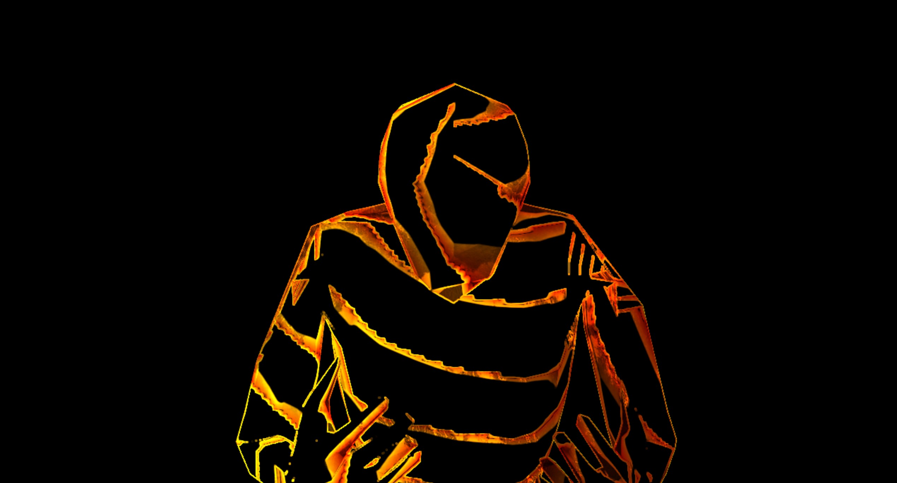
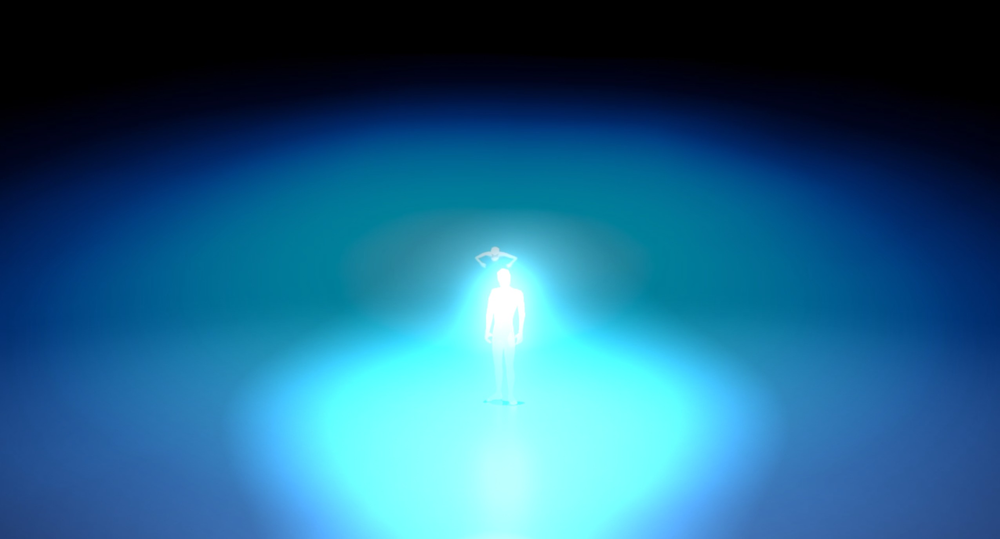
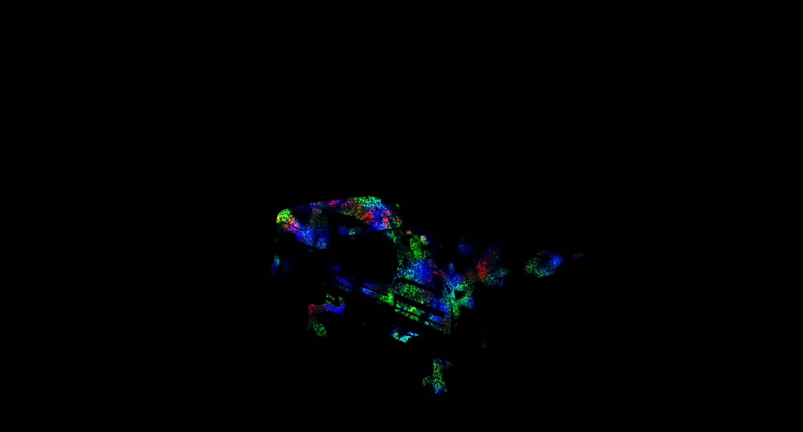
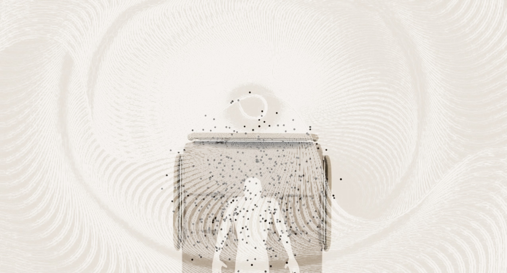
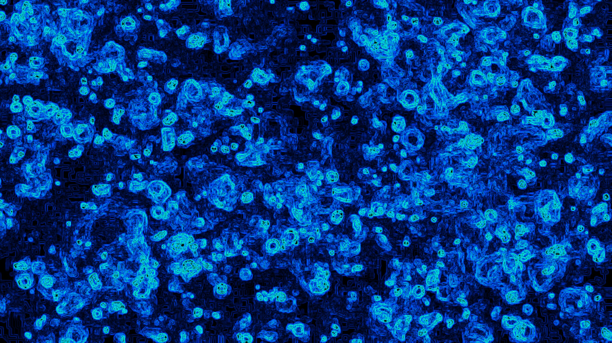

paysage
description
Paysage est un projet multimédia interactif qui mélange sons et images. L’utilisateur peut contrôler l’environnement visuel et sonore grâce à des claviers MIDI, au mouvement et à la voix. Cela crée une expérience où chaque action influence directement ce qui se passe à l’écran. La vidéo utilise des scènes de mon projet d’animation 3D Prisonnier de soi-même, réutilisées pour créer une version plus abstraite et artistique. Le but est d’offrir une expérience immersive où le spectateur explore un monde visuel et sonore en constante évolution.


galerie




